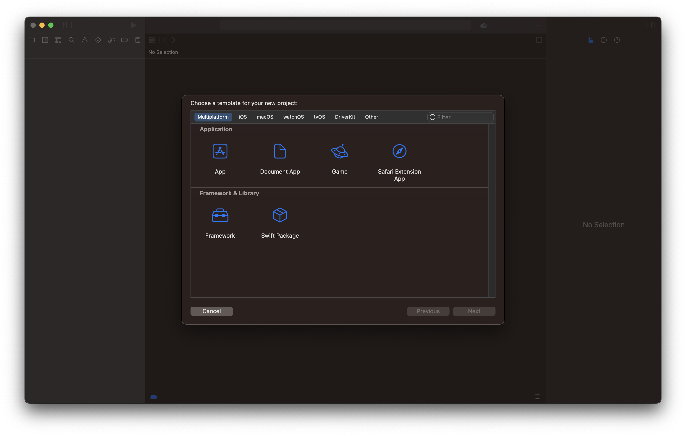
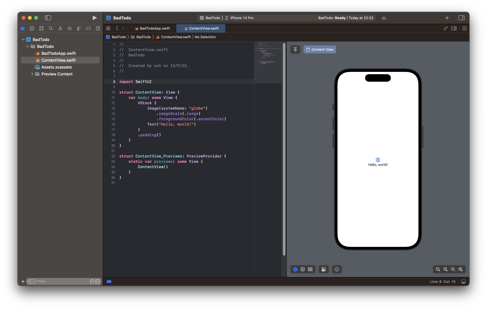
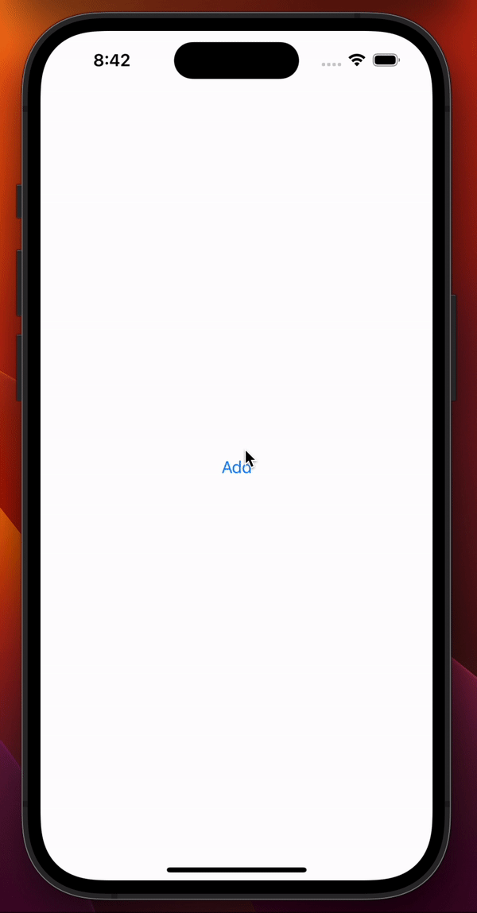
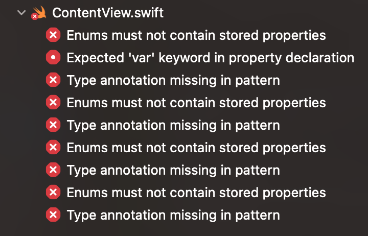

I work on AI + dev tools.
I'm documenting my progress and experience using Swift, SwiftUI, and XCode for the first time to make an iOS app.
Over the last few years I have failed miserably to learn React Native on a few different occasions. I spent too many hours just trying to get it installed, running Hello World, and dealing with errors after updating a package.
It really makes me miss the days of VB6. Open Visual Studio and It Just Works™.
This time, I'll skip the middle layer and go straight for native development. Maybe I will have better success?
Let's go!
Time to download XCode from the app store.
First problem: The app store asks if I want to download an old XCode but with no option to download the latest?
The message isn't clear but it mentions a version number so maybe I need to update my macOS.
Indeed, looks like macOS Ventura is available. Update!
...
(Roughly an hour later)

A new red desktop image. I do miss the mountain ones from several years ago.
Ok, now install XCode.
Second problem: After the download, the App Store is showing a spinning circle instead of the "Open" button beside XCode.
I've already waited several minutes. It doesn't give any status of what is going on.
I'll take my dog for a walk then restart my computer if it isn't fixed.
...
(Roughly 20 minutes later)
Ok, XCode is installed and opened.
Hmmm. Which app do I want? "App" and "Document App" are not very informative names.
Is the "App" under "Multiplatform" the same as the "App" under "iOS"?
Should I just use "Blank" under "Other"?
Guess I'll just pick one and delete it later if it doesn't work.
Nice! This looks fairly understandable.
Only two code files. Not much boilerplate at all.
The first file seems to be the program's entry point which creates a view. The second file defines that view.
Off the bat, a few syntax peculiarities stand out:
Anyway, what am I trying to build here?
I'll go for a todo list app. Along the way, there are a handful of concepts I'll need to figure out with SwiftUI, like creating controls, handling events, and managing state.
My first goal will be simple: add a button that takes the user to another screen.
Button(action: {
print("Clicked!")
}) {
Text("Hello, world!")
.font(.title)
.foregroundColor(.white)
.background(Color.blue)
}
So far this seems easy enough. Basic layout stuff is working. The button is printing to the console when clicked. (I still don't understand why a block can come after a function call like this.)
Now to change the view when the button is clicked. I'll set a variable from the button's event and in the ContentView I'll render a Button when that variable is true.
struct ContentView: View {
var body: some View {
var clicked = false
VStack {
Button("Add", action: {
clicked = true
})
if(clicked) {
Text("CLICKED")
}
}
.padding()
}
}
Nope, not working. The console message is being printed but the text control is not appearing.
...
(30 minutes of reading and tinkering)
...
YAY! Button works :)
To get it working I had to add the @State annotation to the clicked variable or else SwiftUI won't recalculate the view. That was not obvious at all.
That will take some more time for me to understand, but now I am able to modify views at runtime.
Also, I think I am misunderstanding "views". I thought a view is like a page or screen of the app. Based on some event, you render a different view. That would make sense because the new project created a ContentView.swift file for me.
However, this appears to be wrong, at least partially. Views can be made up of multiple views?
And I don't know how to change which global view is displayed at any time. Maybe I need to change BadTodoApp.swift to be like a controller that manages the global views. Or I could treat the default ContentView like the manager of global views.
I'm not sure which is more idiomatic, but both seem doable.
I really just want to know the best way to define a few screens and how the user moves between them.
I saw mentions of navigation in the documentation so I'll go do some digging to get an idea of how people do this.
...
After reading quite a few tutorials and official docs, I am more confused.
SwiftUI seems to treat low-level UI elements (like a button) the same as their opinionated, high-level paradigms (like the NavigationStack), which I think are just predefined sets of low-level UI elements. I didn't expect that, but I'll come back to it and see if it makes sense later.
It looks like I can just ignore the navigation types by modifying the view myself with barely any additional effort. I probably don't get the free transition animations though.
I tried reading about Scenes but I don't see the difference from a View.
Why am I not able to find a straightforward example of Go from SCREEN A to SCREEN B? This is frustrating.
WinForms made this easy. You define forms (same as views?) and control which is visible, like so:
private void button1_Click(object sender, EventArgs e) {
SecondForm myNewForm = new SecondForm();
myNewForm.Show();
this.Close();
}
SwiftUI feels less like declarative programming and more like an opaque system that dictates when my control flow executes.
Anyway, time to try out these ideas to manage which page is visible.
I'm going to attempt a switch statement in my ContentView struct representing which page the user is currently on using an enum.
struct ContentView: View {
@State var currentPage = Pages.First
switch currentPage {
case .First:
Text("First Page")
case .Second:
Text("Second Page")
default:
break
}
}
This gives me an error, "Expected declaration". Not particularly helpful.
Apparently I need to move the switch to inside some View. This resurges my confusion: what is this mysterious { } block?
Oh well, I will just pretend it is a function. Let me try again and add a button to test.
struct ContentView: View {
@State var currentPage = Pages.First
var body: some View {
switch currentPage {
case .First:
VStack {
Button("Go to Second page", action: {
currentPage = .Second
})
}.padding()
case .Second:
VStack {
Button("Go to First page", action: {
currentPage = .First
})
}.padding()
}
}
}
There we have it! I can move from one page to another, FINALLY.
I went ahead and added some layout stuff and additional controls without any problems. I created a struct to represent a todo item along with some basic metadata and created an array to track a dynamic number of todo items.
It isn't a todo list app yet, but it is in sight! The remaining concepts I need to look into are:
So, what do I think about Swift, SwiftUI, and XCode?
Swift has some interesting language features that I think I would really appreciate. My impression is that it is a big language and that the syntax deviates away from languages I'm used to. I want to keep trying it out.
SwiftUI has been the hard part, but it is probably because I don't have much experience with declarative frameworks which have been popular lately (e.g., React).
XCode seems fairly minimalist, which I like. I find the autocompletion to often be more distracting than useful though.
But... the error messages are abysmal.
These look like error messages from a 2003 C++ compiler. Terse, vague, and full of jargon. In stark contrast to modern compilers, these give little to no context other than the line number and no suggested fix.
For example, I forgot just the "case" keyword inside an Enum declaration and got this:
Not exactly helpful!
I did have fun though.
This was a more pleasant experience than when I tried to learn React Native. I knew I'd hit some snags, especially since I jumped in without reading much documentation, so I'm happy with my progress. There's definitely some low hanging fruit for Apple to address in terms of usability.
Ultimately, I had my first iOS app working in a handful of hours!
My next goal is to launch something to the app store within a few months. I'll write about that experience too.